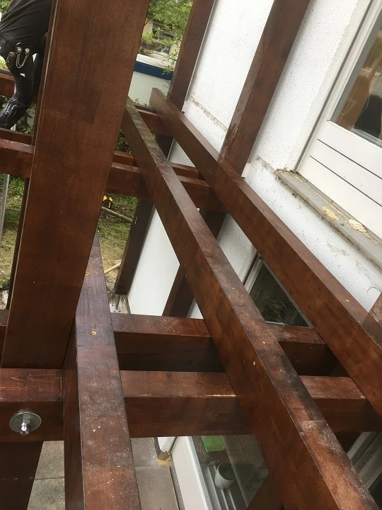
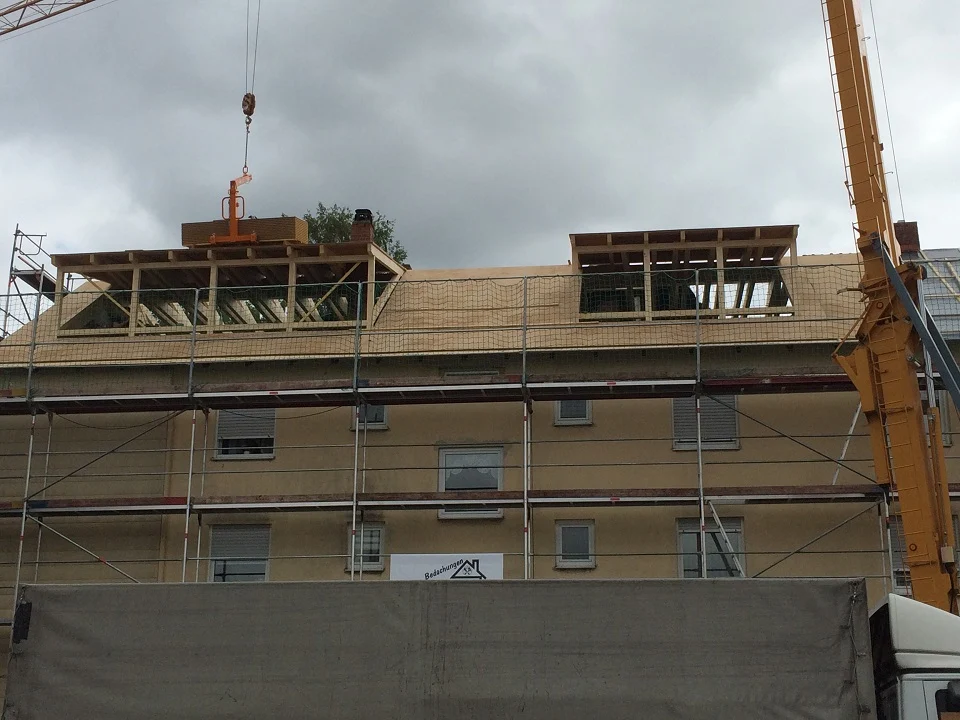
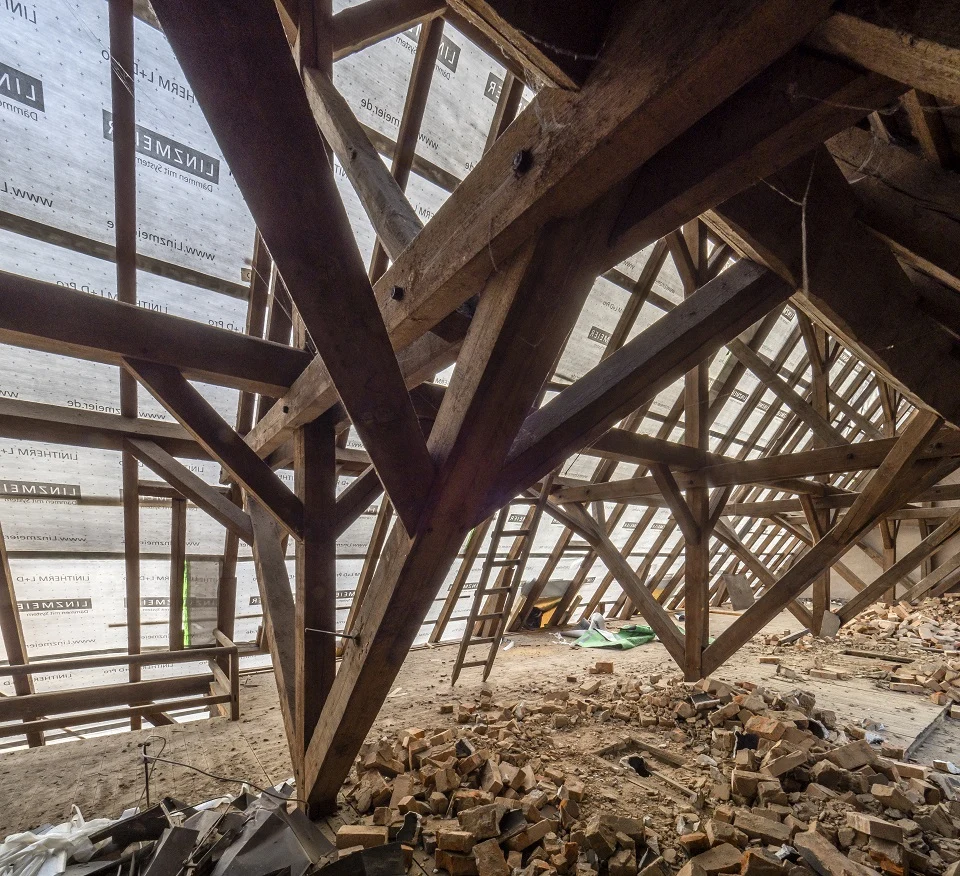
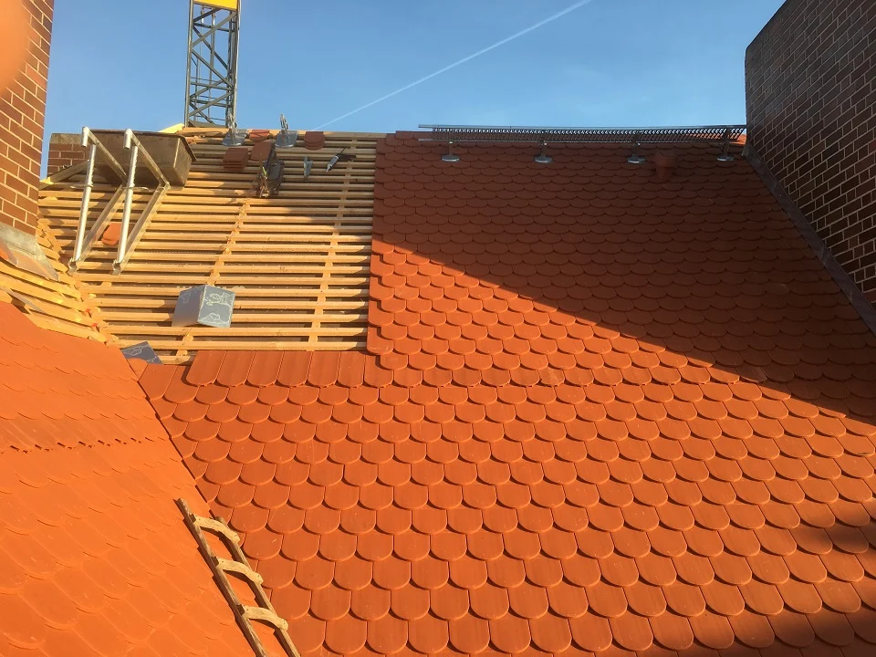

Leistungen
Vom Dach.
Bis ins Detail.
Dacheindeckung, Abdichtung, Dämmung und mehr: Wir verbinden die einzelnen Aufgaben zu einer passenden Lösung für Ihr Gebäude.
 01
01Steildach & Dacheindeckung
Dachziegel und Dachsteine prägen ein Gebäude. Wir unterstützen Sie bei einer passenden Eindeckung und stimmen die Umsetzung auf Ihr Vorhaben ab.
Leistung entdecken 02
02Flachdach & Abdichtung
Flachdächer, Terrassen und Garagendächer stellen besondere Anforderungen an ihre Abdichtung. Wir kümmern uns um die fachgerechte Umsetzung.
Leistung entdecken
03Spenglerarbeiten
Metallarbeiten ergänzen die Dachfläche und verbinden einzelne Bauteile. Sorgfalt an diesen Stellen ist ein wesentlicher Teil unserer Arbeit.
Leistung entdecken
04Dämmung & Dachfenster
Wärmedämmung, Dachflächenfenster und Lichtkuppeln eröffnen neue Möglichkeiten. Wir betrachten Dachaufbau und Ausstattung gemeinsam.
Leistung entdecken
05Sanierung & Wartung
Ein Dach braucht auch nach der Fertigstellung Aufmerksamkeit. Wir unterstützen Sie bei Reparaturen, Sanierungen, Reinigung und Wartung.
Leistung entdecken
06Kran & Gerüst
Eigener Kran und Gerüstbau unterstützen unsere Arbeit am Gebäude. Die erforderlichen Leistungen stimmen wir auf den Ablauf Ihres Vorhabens ab.
Leistung entdeckenAlles im Zusammenhang
Das ganze Gebäude
im Blick.
Auch Fassaden- und Schornsteinkopfbekleidungen, Dachbeschichtungen und Hausrenovierungen gehören zum bestehenden Angebot. Für Fragen zu Fenster-, Maler- und Putzvertrieb sprechen Sie uns an.
Dachstühle und Dachgauben werden mit der langjährig verbundenen Zimmerei abgestimmt.
Ihr Vorhaben besprechenDer nächste Schritt.
Ein gutes Dach.
Beginnt mit einem Gespräch.
Neubau, Sanierung oder eine Frage zum Bestand – wir hören gerne von Ihnen.
Reden wir darüber 09851 / 5893666